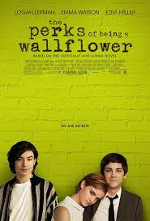

In this part I'm going to post some of my favourite books.
Resume: "Happy fifty third birthday, Doctor. Welcome to the first day of your death". Dr. Frederick Starks, a New York psychoanalyst, has just received a mysterious, threatening letter. Now he finds himself in the middle of a horrific game designed by a man who calls himself Rumplestiltskin. The rules: in two weeks, Starks must guess his tormentor's identity. If Starks succeeds, he goes free. If he fails, Rumplestiltskin will destroy, one by one, fifty-two of Dr. Starks' loved ones—unless the good doctor agrees to kill himself. In a blistering race against time, Starks' is at the mercy of a psychopath's devious game of vengeance. He must find a way to stop the madman—before he himself is driven mad. . .
Resume: The story follows Charlie, an introverted teenage boy as he starts high school, falls in love, and faces his traumatic past. Through it all, Charlie struggles to learn who he is and how he fits into the world, and to understand the nature of love in all its forms.
Click here to go back to the main page